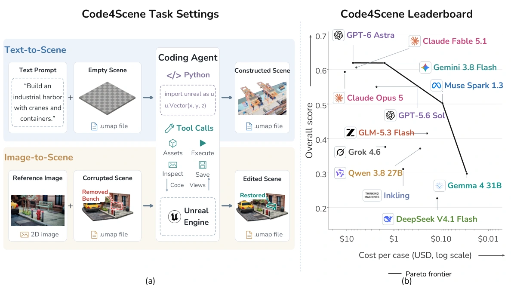
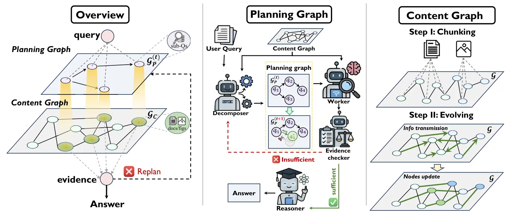
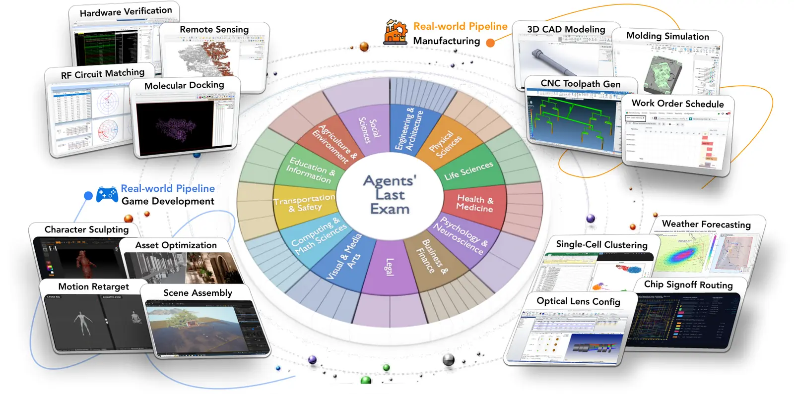
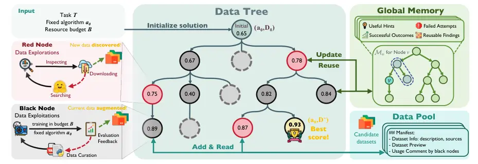

About
I am an undergraduate at the School of Computer Science, Shanghai Jiao Tong University. I work with Prof. Lianhui Qin at UC San Diego’s Q-Lab on evaluating coding agents in 3D environments. I also lead reinforcement-learning research at MemTensor, co-advised by Prof. Muning Wen at APEX Lab, SJTU.
My research interests are LLM post-training, agentic reinforcement learning, and reliable agent evaluation. My recent work includes Code4Scene, a benchmark for constructing and editing Unreal Engine scenes, and PPO-based training for reasoning under training–inference mismatch.
I am particularly interested in agent memory and recursive self-improvement (RSI), and am looking for research opportunities and collaborators in these directions. I am applying to graduate programs for Fall 2027—please feel free to reach out.
Selected Publications and Preprints
* Equal contribution.



Experience
Q-Lab, UC San Diego
Jun 2026 – PresentResearch Assistant · Advised by Prof. Lianhui Qin
Code4Scene: Evaluating Coding Agents in 3D Environments
- Co-first author; led the evaluation framework. Designed and implemented six verifier modules covering candidate integrity, physical safety, semantic verification, detailed and overall alignment, and ground-truth comparison.
- Developed task-specific criteria: requirement-level checks and whole-scene alignment for construction; separate measures of target recovery and preservation of unrelated content for editing.
- Built the verification workflow, combining Unreal Engine state measurements, support and collision checks, camera planning, targeted visual evidence, VLM judging, and score aggregation, with parallel evaluation and human verification.
- Evaluated 14 model configurations across construction and indoor/outdoor editing. Joint analysis of scores and trajectories exposed weak spatial composition and unintended scene changes in 35.8% of complete target recoveries on public editing tasks.
- Audited execution trajectories and identified five answer-exposure pathways involving answer metadata, binary ground-truth map decoding, UE/MCP backends, cross-case inputs, and original asset-pack scenes.
MemTensor / APEX Lab, SJTU
May 2026 – PresentProject Lead, MemTensor · Co-advised by Prof. Muning Wen, APEX Lab
Reinforcement Learning for Reasoning under Training–Inference Mismatch
- Independently lead PPO-based post-training research on training–inference mismatch, using high-precision feedback to guide low-bit reasoning policies.
- Developed Quantization-Counterfactual Advantage (QCA): rank BF16 alternatives against low-bit actions at the same prefix, guided by positive critic-estimated benefits.
- Developed Advantage-Weighted Consistency (AWC), a teacher-to-policy KL objective that uses positive advantages to prioritize BF16 feedback during PPO updates.
- Implemented QCA and AWC in verl/vLLM; evaluate their effects on DAPO, MATH, and GSM8K against matched BF16 PPO and QaRL baselines.
Agents’ Last Exam · UC Berkeley Collaboration
Feb 2026 – May 2026Research Contributor
- Designed the MicroDicom chest-X-ray annotation adjudication task using nine NIH CXR DICOM cases, structured outputs, and hidden case-level references.
- Implemented file/schema validation and IoU-based localization checks for verifiable medical-software agent evaluation.
CMIC Lab, SJTU
Oct 2025 – Feb 2026Research Contributor · Advised by Prof. Siheng Chen
- Extended the text-only MA-RAG baseline to process text and images for G²-Reader; integrated and debugged LightRAG for controlled comparisons.
- Completed three full runs over 2,271 VisDoMBench samples across five domains, using Qwen3-VL-32B-Instruct and a fixed top-5 retrieval budget.
IPADS Lab, SJTU
Summer 2024Summer Research Intern · Advised by Prof. Mingkai Dong
Projects
LSM-Tree Storage Engine and Vector Search
Spring 2025Course Project · Advanced Data Structure, Shanghai Jiao Tong University
- Implemented a C++ LSM-tree store with skip-list memtables, SSTable compaction, and Bloom filters; added embedding-based search, HNSW indexing, and persistence.
- Parallelized top-k search, reducing mean query latency from 76.34 ms to 7.94 ms on 49,998 precomputed vectors (1 vs. 28 threads, 128 queries).
Education
My software engineering training gave me a foundation in systems, algorithms, and reliable software. I now apply that background to AI research, particularly LLM agents and reinforcement learning.

Shanghai Jiao Tong University (SJTU)
School of Computer Science · B.E. in Software Engineering
Aug 2023 – Jun 2027 (Expected) · Shanghai, China

The Chinese University of Hong Kong (CUHK)
Summer Exchange · Robotics and Artificial Intelligence
Jul 2025 – Aug 2025 · Hong Kong, China
The High School Affiliated to Renmin University of China (RDFZ)
Secondary education
Beijing, China
Honors
- SJTU Outstanding Student · 2023–2025
- SJTU Merit Scholarship · 2023–2025
Service
Reviewer · ICLR 2027
Contact
I am always happy to hear from people who reach out—for academic discussions, research collaborations, or conversations beyond academia. I am currently open to Fall 2027 graduate opportunities.
Miscellany
Outside research, I am interested in Bazi (the Four Pillars of Destiny) and tarot. I love good food and experiencing the world with the people I love.